Skutečné WPF / Avalonia rendery 4. 11. 2026. Obrázky nebyly retušovány. WPF používá skutečné DPI Windows, Avalonia testovací render 96 DPI. Zdrojový soubor a SHA-256 každého obrázku jsou v manifestu . Kliknutí otevře plné rozlišení.
Shoda všech oken není potvrzena: konkrétní nálezy a zbývající rozdíly . WAV/FLAC používají shodné stereo PCM, 48 kHz / 16 bit, zobrazené framy [100,400). U FLAC je vpravo export samotného grafu.
Visual Media Analysis — FLAC / stejné PCM Původní WPF Opravená Avalonia / Windows 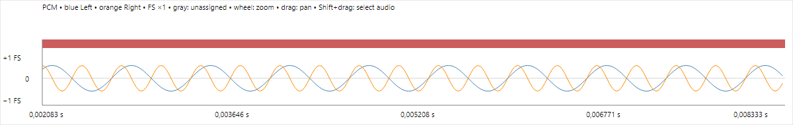
Linux — stejné ověřované scénáře TestResults/WpfParity-2026-11-04/linux/screenshots/avalonia-audio-analysis.png 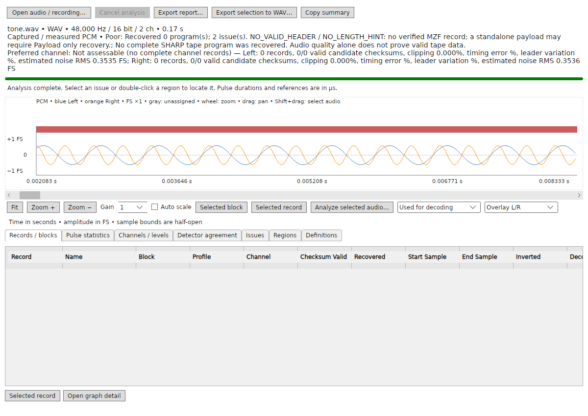
TestResults/WpfParity-2026-11-04/linux/screenshots/avalonia-dsk-map.png 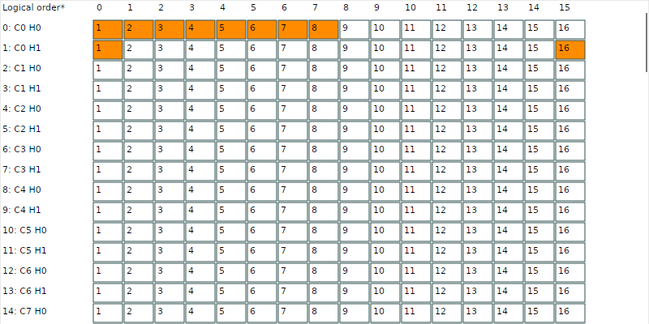
TestResults/WpfParity-2026-11-04/linux/screenshots/avalonia-quickdisk-map.png 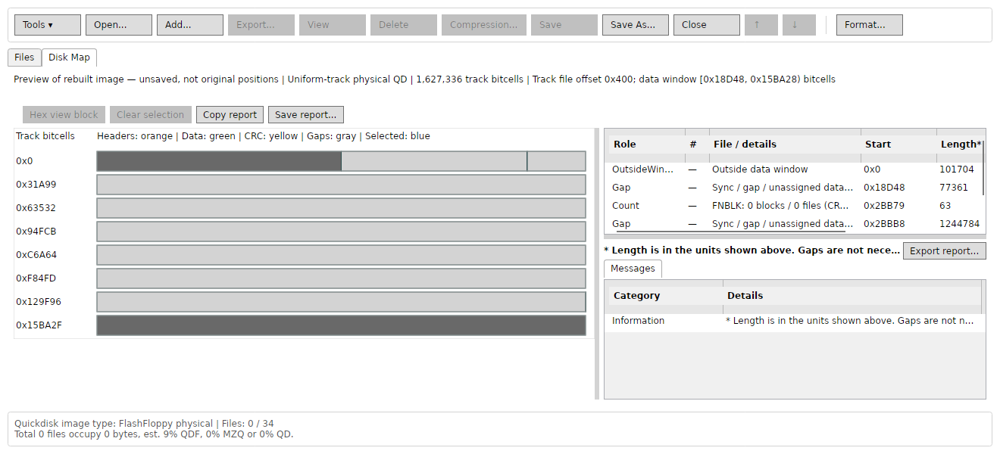
TestResults/WpfParity-2026-11-04/linux/screenshots/avalonia-quickdisk-visual.png 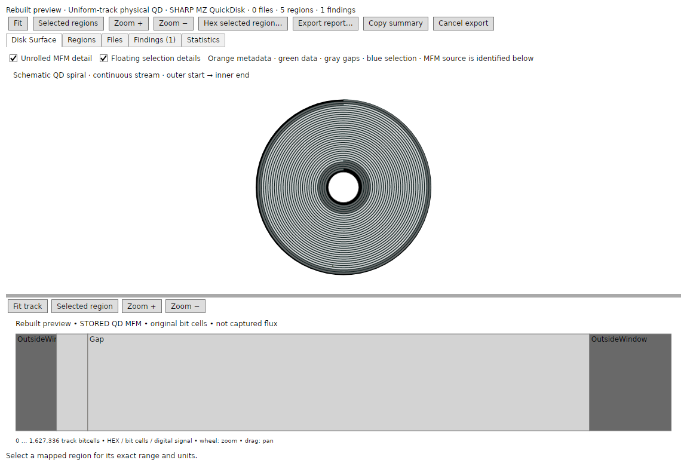
TestResults/WpfParity-2026-11-04/linux/screenshots/avalonia-waveform-flac.png TestResults/WpfParity-2026-11-04/linux/screenshots/avalonia-waveform-wav.png 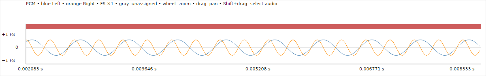
TestResults/WpfParity-2026-11-04/linux/screenshots/wpf-audio-independent.png 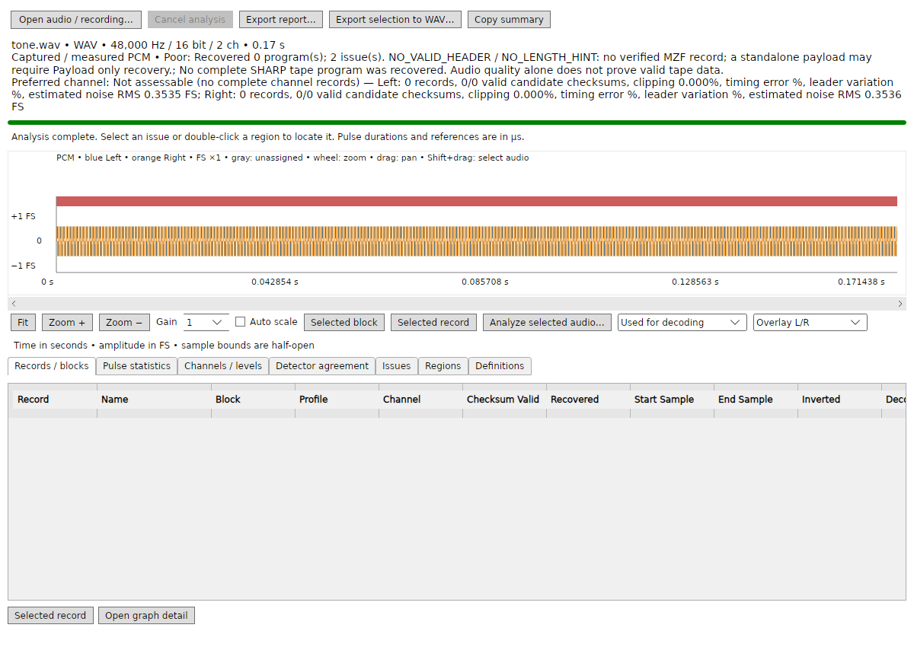
TestResults/WpfParity-2026-11-04/linux/screenshots/wpf-disk-1320x600.png 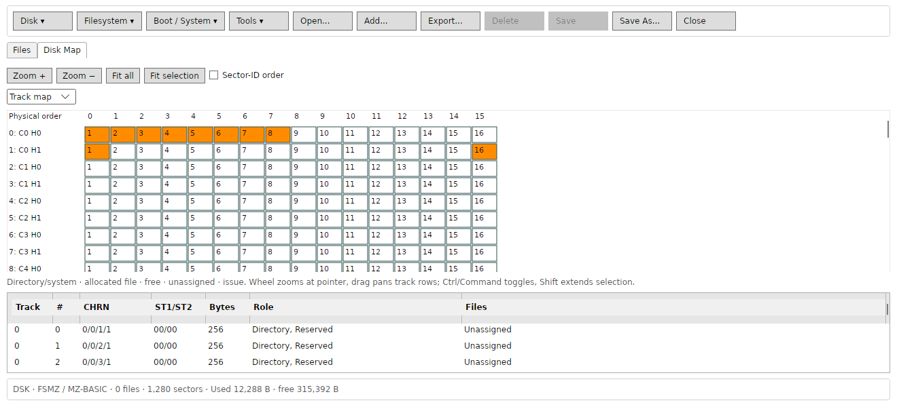
TestResults/WpfParity-2026-11-04/linux/screenshots/wpf-disk-900x480.png 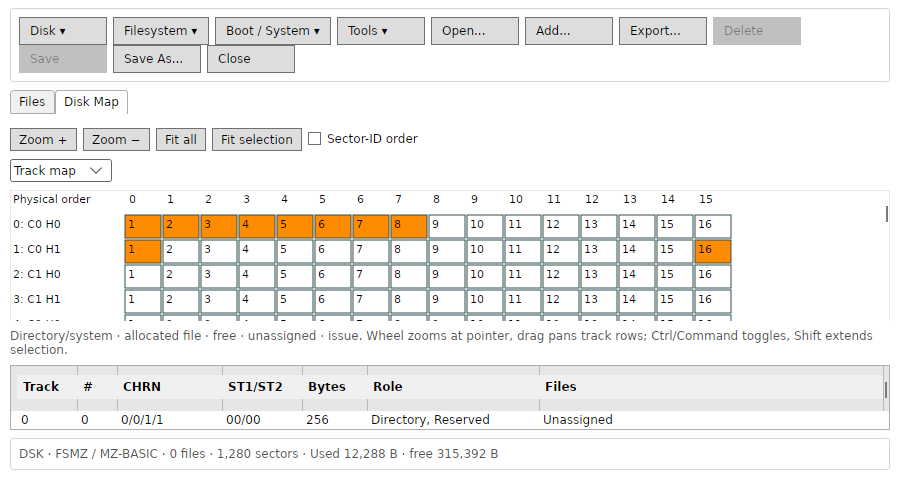
TestResults/WpfParity-2026-11-04/linux/screenshots/wpf-disk-inspector.png 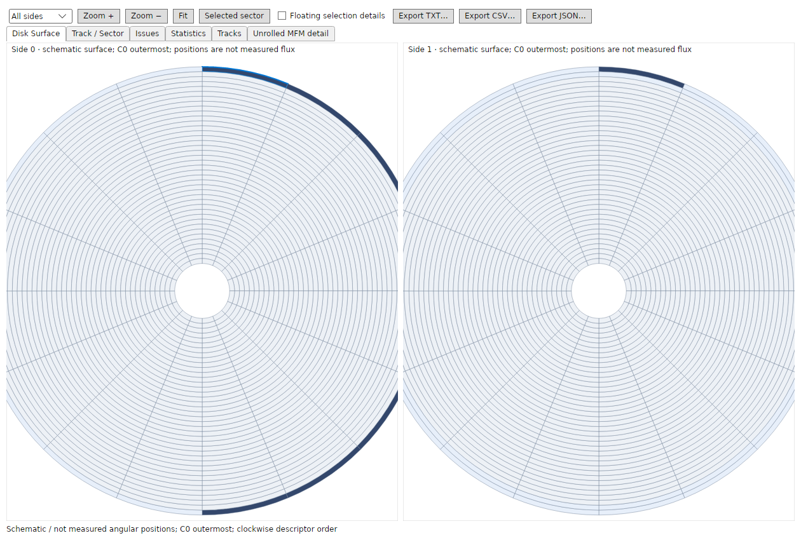
TestResults/WpfParity-2026-11-04/linux/screenshots/wpf-hex-browser.png 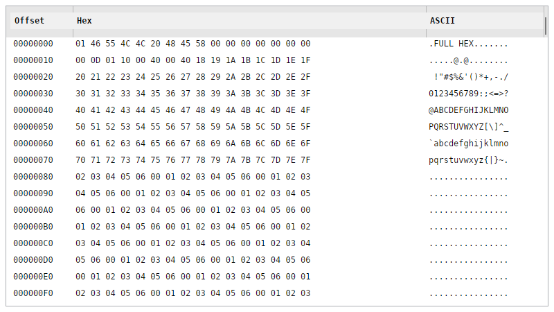
TestResults/WpfParity-2026-11-04/linux/screenshots/wpf-loader-speed.png 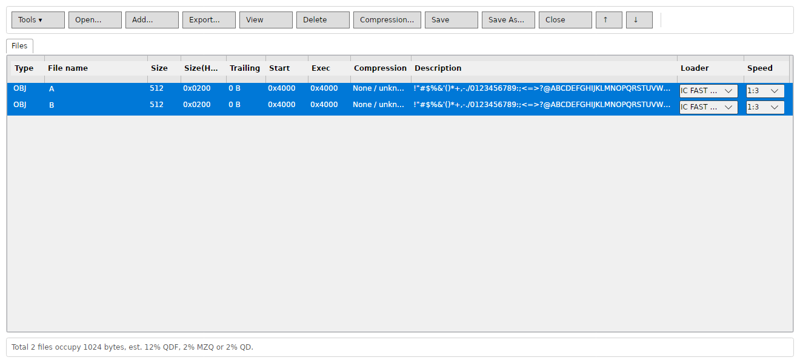
TestResults/WpfParity-2026-11-04/linux/screenshots/wpf-quickdisk-inspector.png 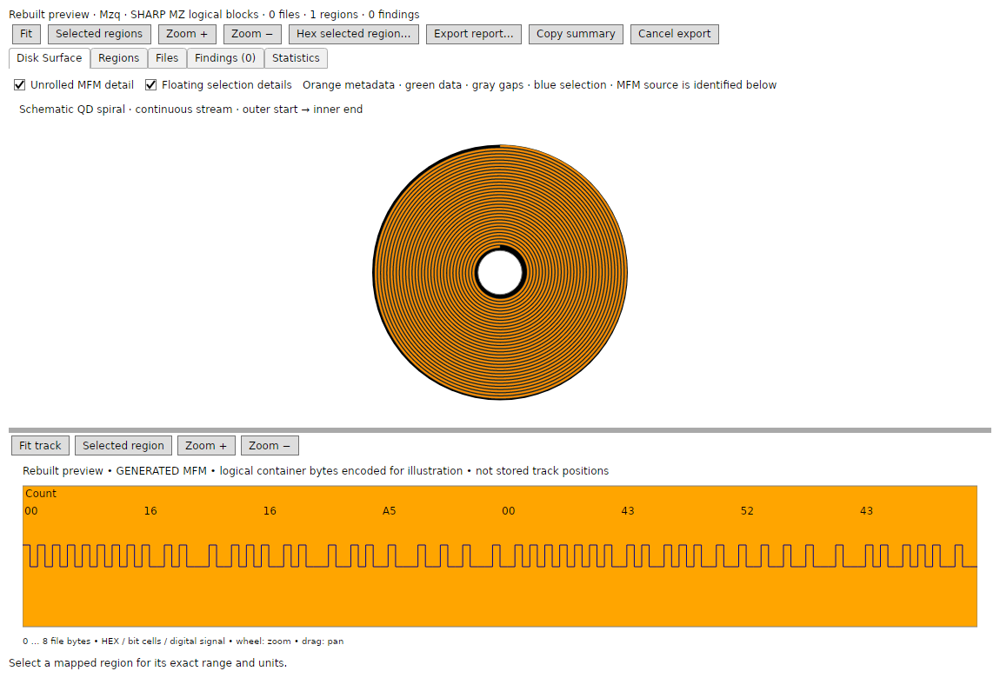
TestResults/WpfParity-2026-11-04/linux/screenshots/wpf-tape-inline.png 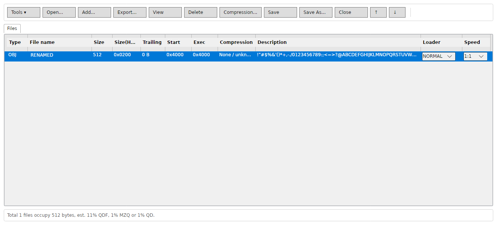